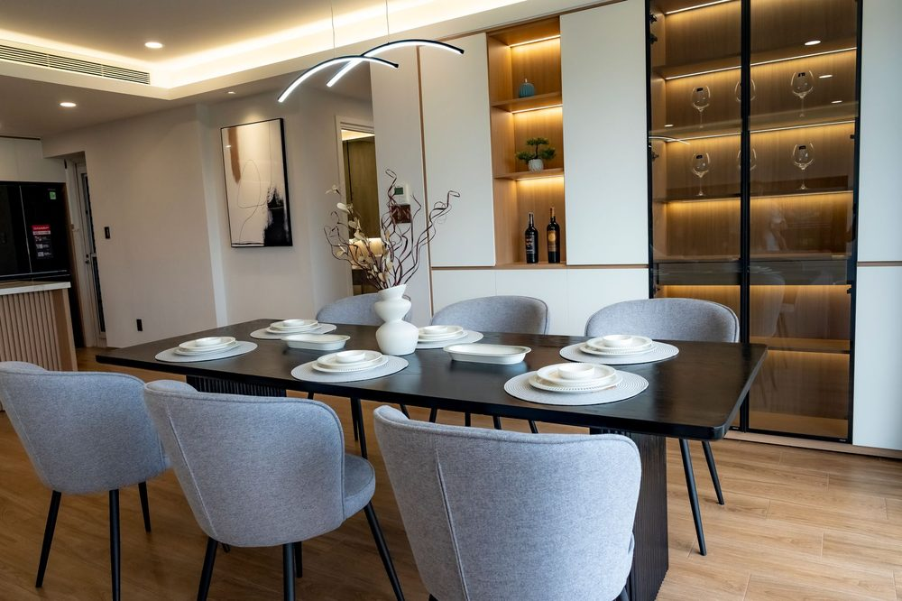
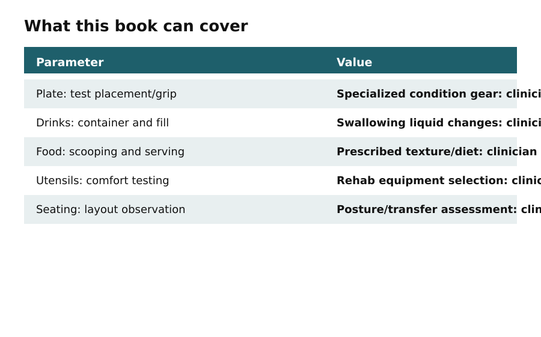
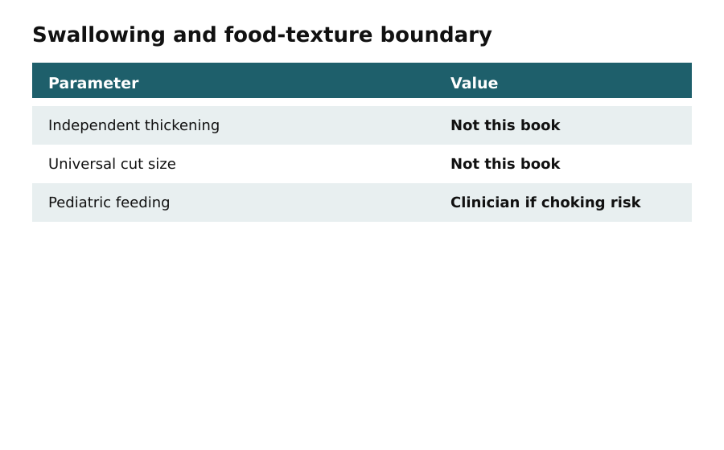

Name the actual problem, not a spill-proof promise
In this apartment
Ravi lives in a 1BHK in Pune with a compact dining area. He experiences tremors when he reaches across the table. The city name is an illustration. The task is the same in a US home: test what actually slides, tips, or spills for this person.
Spills follow movement, reach, grip, vision, and furniture — but no setup eliminates them.
What this book can and cannot do. This book provides practical ideas for reducing spills, improving reach, organizing dining spaces, and making cleanup easier. No arrangement, product, or routine can guarantee spill-free dining or eliminate every risk. Test each adaptation with the individual using it, reassess as needs change, and obtain qualified clinical or accessibility advice when a person has significant swallowing, movement, balance, vision, or coordination difficulties.

Watch where the diner’s hand travels, which items slide, and whether lighting or a crowded path adds effort. Keep needed items within a comfortable reach for that person.

Ask the diner what feels comfortable, useful, and dignified. Do not introduce an adaptation solely because it looks safer or more organized to someone else.
The table below separates ordinary spill-reduction work from questions that need individualized advice.
Do this
- Watch one real meal and note what slid, tipped, spilled, or felt tiring.
- Ask the diner what they want changed — and what they want left alone.
- Write whether swallowing, falls, or a major movement change means professional advice first.
Before you move on
- Limitation statement read: no setup is completely spill-proof
- Diner preferences asked
- Clinical boundary reviewed